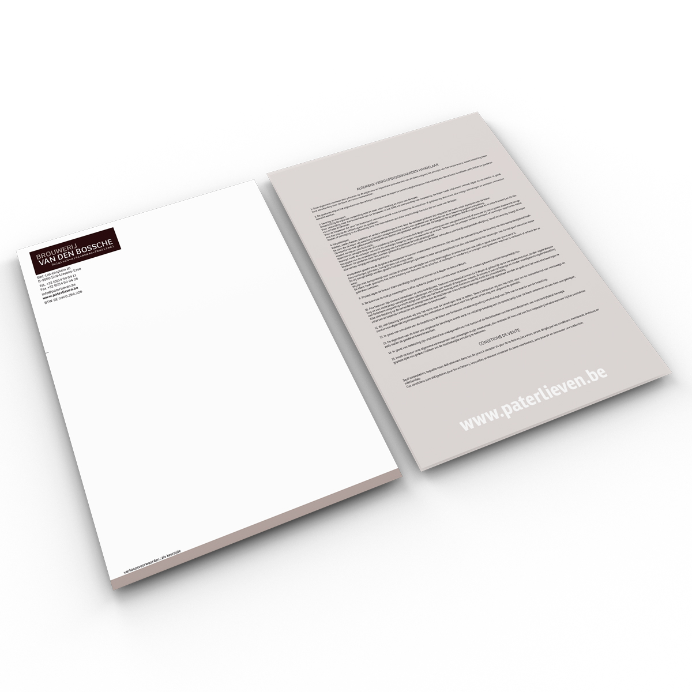

Briefhoofden
Wat zijn Briefhoofden?
Definitie
Briefhoofden zijn gepersonaliseerde kopteksten die bovenaan officiële documenten worden geplaatst, zoals brieven, facturen en andere zakelijke correspondentie. Ze bevatten meestal het logo van het bedrijf, contactgegevens, en andere relevante informatie zoals bedrijfsregistratienummers.
Voordelen van Briefhoofden
- Professionele Uitstraling: Geeft uw correspondentie een professionele en betrouwbare uitstraling.
- Merkidentiteit: Versterkt de merkidentiteit door consistent gebruik van logo, kleuren en lettertypen.
- Herkenbaarheid: Zorgt ervoor dat uw bedrijf gemakkelijk herkenbaar is op alle documenten.
Toepassingen van Briefhoofden
Briefhoofden worden vaak gebruikt voor:
- Zakelijke Brieven: Officiële correspondentie met klanten, leveranciers en partners.
- Facturen: Professioneel ogende facturen die consistent zijn met de huisstijl van het bedrijf.
- Offertes: Gepersonaliseerde offertes die een professionele indruk maken.
- Contracten: Officiële documenten zoals contracten en overeenkomsten.
Hoe Werkt het Ontwerpen van Briefhoofden?
Het ontwerp van briefhoofden begint met het selecteren van een lay-out die past bij uw merkidentiteit. Elementen zoals het logo, bedrijfsnaam, adres en contactgegevens worden strategisch geplaatst om een overzichtelijke en aantrekkelijke koptekst te creëren. Bij het drukken wordt vaak gebruik gemaakt van hoogwaardige papiersoorten en druktechnieken om een professionele afwerking te garanderen.
Belangrijke Overwegingen bij het Ontwerpen van Briefhoofden
- Kleurgebruik: Zorg ervoor dat de kleuren van het briefhoofd overeenkomen met uw merkidentiteit.
- Lettertype: Kies een leesbaar lettertype dat past bij de stijl van uw bedrijf.
- Lay-out: Houd de lay-out eenvoudig en overzichtelijk voor een professionele uitstraling.